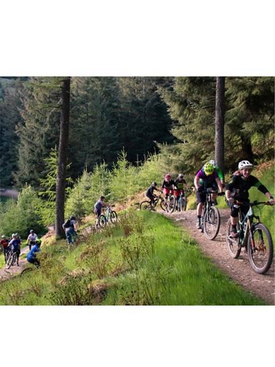
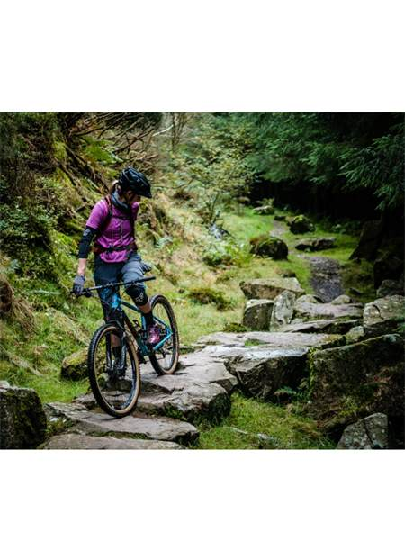
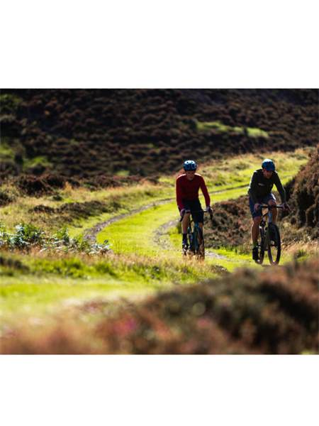
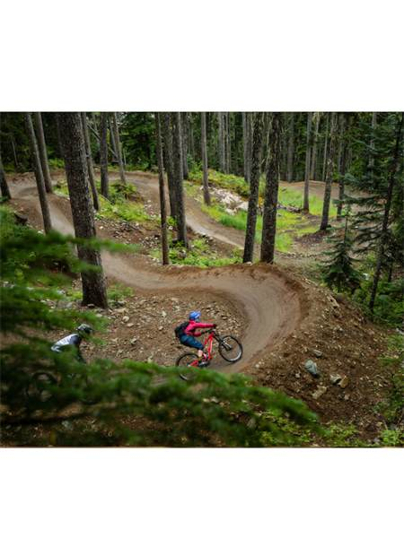
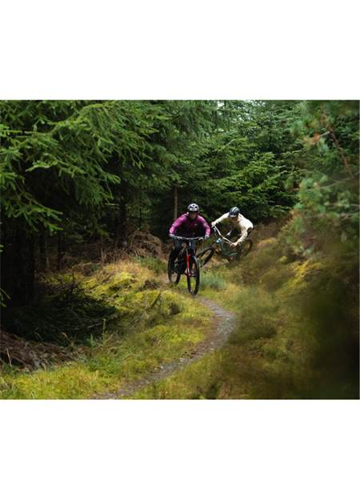
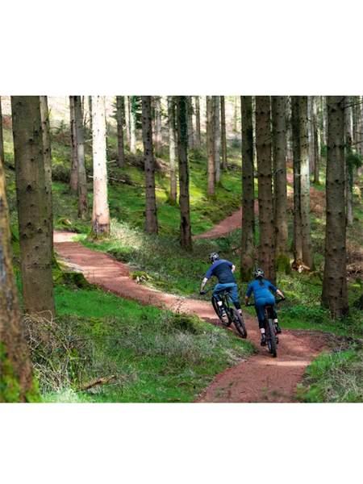
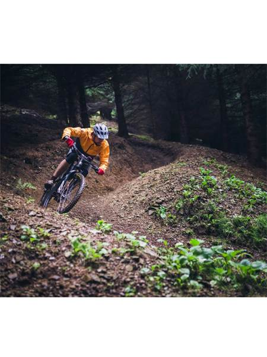
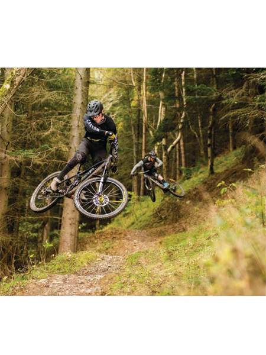
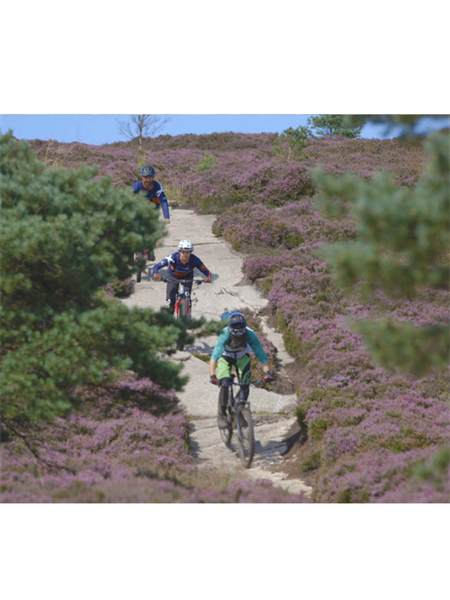

Beginner Trails

Glentress Green
A gentle, wide forest path perfect for a relaxing family afternoon.

The Seven Stanes
Introduce yourself to singletrack with smooth corners and no steep drops.

Valley Explorer
Follow the river on flat, scenic trails with incredible wildlife views.
Intermediate Trails

The Blue Velvet
Fast, flowing berms and small rollers to test your speed and balance.

Spooky Wood
The legendary descent with big berms and tabletop jumps (all rollable).

Electric Blue
A punchy climb followed by a rhythmic, winding forest descent.
Extreme Trails

The Golfie
Highly technical rock gardens and narrow ridgelines. For experts only.

The Bone Shaker
Steep, rooty chutes and drops that require maximum focus and skill.

Final Descent
A high-speed adrenaline rush with large gap jumps and wall-rides.
Trail Gallery
Experience the Scottish Borders Discover the natural beauty of the region known for its rolling hills, peaceful forests, and unforgettable landscapes. Our trail network lets you experience this stunning part of Scotland up close, whether you're enjoying a relaxed scenic ride or taking on more challenging terrain.